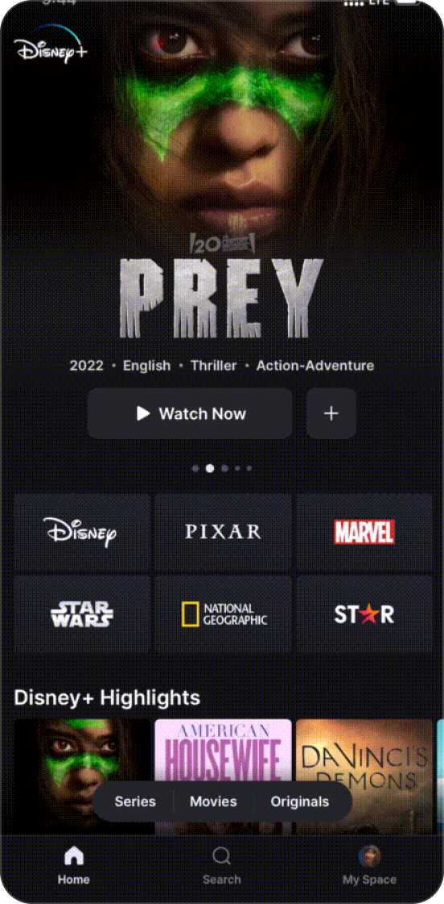
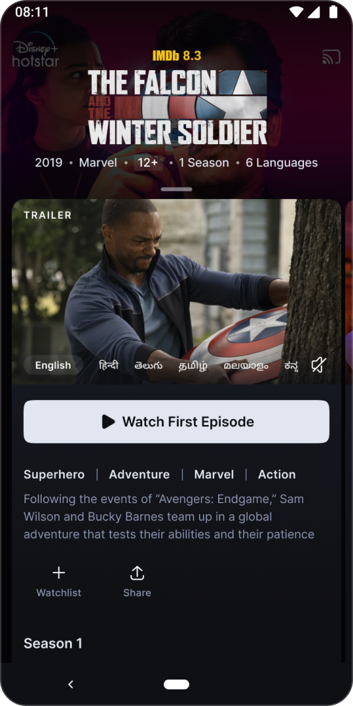
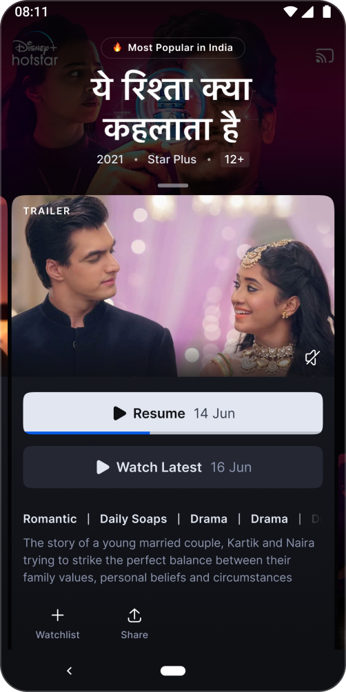
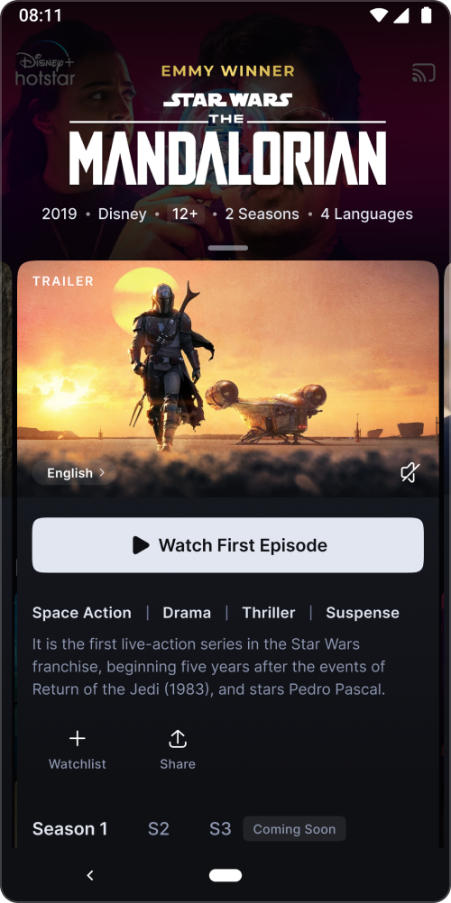

Disney+ Hotstar: Browsing UX Reimagined
A data-driven journey towards an intuitive, personalised, and highly scannable content details experience for India's leading streaming platform.

The Discovery Crisis
Disney+ Hotstar is the leading streaming service in India with over 300 million active users and 50 million subscribers. Recently, the platform launched a completely redesigned Disney+ experience across 80+ emerging countries.
Back in January 2020, data showed a jarring finding: 35% of people coming to Disney+ Hotstar on an average day couldn't find anything they liked to watch, dropping off without streaming a single title. This drop-off occurred despite having a humongous catalog of 7,000+ premium titles from Marvel, Star, ABC, HBO, Disney, and more.
Establishing Causation through Sampling
Deeper analysis revealed a critical correlation: 85% of people who sampled more than 5 titles ended up watching something.
"Sampling" refers to opening a content details page to read the description or watch the trailer. On dividing users based on watch behavior, we observed:
Rethinking Discovery Flow
Why weren't users sampling enough? Under the status quo flow, a user had to tap a home page thumbnail, wait for a new details page to load, evaluate it, and click back to return. This high interaction cost discouraged users from sampling.
While poster thumbnails work beautifully as visual hooks, users need more info upfront (genre, synopsis, release date) to gauge interest.


Industry Context & Swiping UX
We looked at how other streaming platforms provide quick contexts without leaving the scroll plane, and analyzed mobile interactions with high ease of sampling.
Netflix previews
Netflix uses autoplaying video hover previews directly on the grid to provide quick sensory contexts.
Amazon Prime context
Prime Video displays hovering overlays containing instant IMDb ratings and genre details over active thumbnails.
Swipe Mechanics
Mobile users are primed for gestures: Swipe Down to instantly dismiss details, Swipe Left/Right to slide between titles, and Swipe Up to reveal complete directories.
- Swipe Down: Dismiss details instantly to return to scroll.
- Swipe Left/Right: Slide between titles smoothly.
- Swipe Up: Show complete directories.


Browse Sheet 1.0
Hypothesis
A quick-loading swipable bottom sheet presenting key decision-making factors directly on the homepage will reduce interaction cost and boost content sampling.
We launched a quick MVP test featuring autoplaying trailer, upfront genres/studios tags, synopsis, and watchlist CTA.
Anatomy & Layout Options

Option A: Low context
Kept high visual context of the underlying grid, but details page height was too short to fit episodic lists.

Option B: Fixed Dismiss
Offered a dedicated click area at the top to dismiss the sheet, but users naturally preferred swiping anywhere.

Option C: Horizontal CTAs
Clean horizontal list for primary actions, but failed to establish visual priority hierarchy for 'Watch' button.
Experiment Results
Browse Sheet 1.0 hit all success metrics: Distinct title sampling increased by 35%, homepage sessions Watch conversion grew by 8%, and watchlist additions climbed by 16%.
TV Show Drop
TV starts dropped 0.7% because show sampling requires more commitment and info than movies.
Downloads Hidden
Offline downloads decreased by 3% due to download actions being hidden beneath the fold.
Foundational Study & Revamp
With Browse Sheet 1.0 proving our interaction hypothesis, we set out to redesign the entire details page experience from scratch.
We conducted a card-sorting exercise with users to map what factors influence their choice to stream movies or shows, sorting from highest to lowest priority:
Trailer / Promo Video
Autoplaying trailers and promo snippets provide immediate sensory context to gauge visual quality and tone.
Genres & Studios
Categorical affinity (e.g. Marvel, Pixar) remains a primary interest anchor.
Duration / Number of Episodes
To gauge commitment feasibility based on immediate time availability.
Synopsis
High-level storyline context, though long descriptions are routinely skipped.
Cast
Cast members are surprisingly less critical on OTT decision-making compared to theatrical channels.
Release Date
Freshness of content influences selection.
The X-Factor
Awards, nominations, popularity rankings, or recommendations from friends.
Browse Sheet 2.0
Browse Sheet 2.0 presents an intuitive, scannable, and personalised content details experience that maps directly to users' mental models.
When users swipe up on the sheet, it transforms into a full-screen landing template. We reconfigured this layout below the fold to ensure immediate scannability.



UX Solutions Map
Hover over the feature cards on the left to see where each design improvement is located on the interface:
Upfront Watch CTA
Designed a prominent, high-contrast action button that stands out clearly from metadata.
Upcoming Episode Tracker
Added a dedicated status line calling out release schedules and dates for running shows.
Consumable Genre Tags
Replaced long description text chunks with micro-genre metadata tags for quick scannability.
Vertical Episode Navigation
Rebuilt episode directories vertically, making scanning multiple episodes natural.
Original Language Badges
Called out the content's original language alongside dubbed parameters clearly.
Configurable Secondary CTA
Personalised action button controlled dynamically by backend for downloads or membership upgrades.

Impact & Consumer Love
Following launch in South Africa and Middle East markets, Browse Sheet 2.0 saw huge positive metrics and social media appreciation.
Love the new bottom sheet on Disney+ Hotstar. Makes it so much faster to preview shows and read descriptions without losing my scrolling spot on the homepage. Great UX detail!
Jun 14, 2020Finally! A vertical episode directory that doesn't make me scroll horizontally for ages to find episode 45 of my show. Swiping up from the sheet to go full screen is super smooth.
Jun 20, 2020Auto trailer preview, micro-genre tags, and upfront watchlist actions all in one quick-load swipe card. Disney+ Hotstar is setting design benchmarks for streaming apps in India.
Jul 02, 2020Looking Towards India
Browse Sheet 2.0 will launch for our biggest user base of over 300M users in India. Based on performance metrics from early market releases, we project double-digit increases in title streams and watchlist saves, boosting overall homepage-to-watch time conversions by 3%.
Future Strategy
The introduction of browse sheet on Disney+ Hotstar has had a dramatic impact on the content browsing and watching experience. More titles are being sampled, more items are being added to watchlist, and effectively more people are finding their favourite content to watch. We are committed to fine-tuning our experience over time to equip users with the right information.